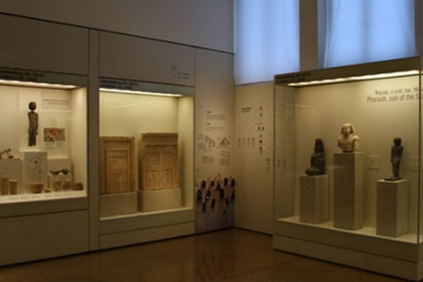
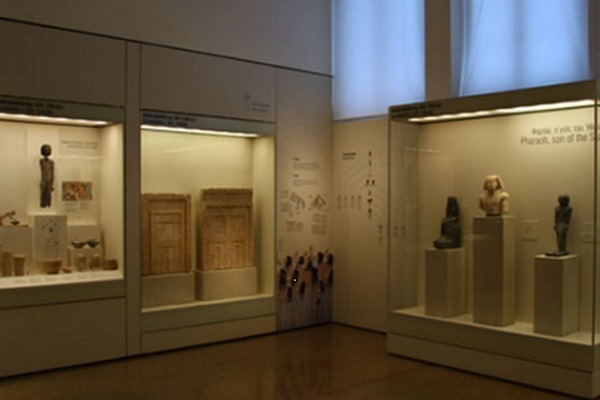

Fayoum Governorate is one of the governorates of Egypt, and its capital is the city of Fayoum, which is the largest natural oasis in Egypt. The governorate is located in the North Upper Egypt region, which includes three governorates: Fayoum, Beni Suef, and Minya. It is in the middle of the governorates of Central Egypt, Giza, Beni Suef, and Minya. The governorate is surrounded by desert on all sides, except for its southeast, which connects to Beni Suef Governorate. Fayoum is famous for the presence of many natural places, the most famous of which are the Qarun Lake Reserve, the Wadi El Rayan Reserve, the Wadi El-Hitan Reserve, which is registered as a World Heritage Site, in addition to its moderate climate and its location near the Egyptian capital, Cairo
The most famous tourist attractions in the Fayoum governorate
 
